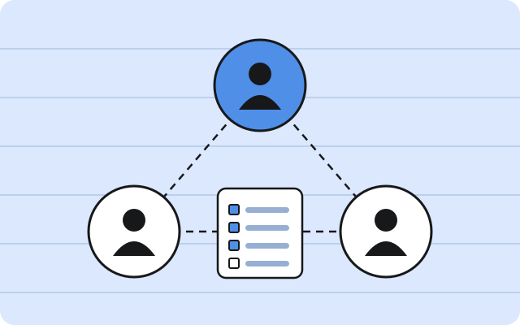
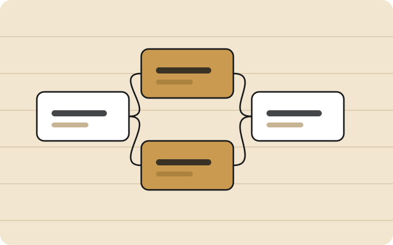
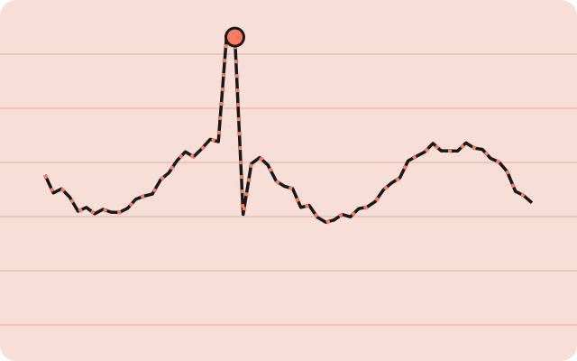

AI & GenAI projects
Tools that read, rank, and write.
A crypto signal research pipeline, retrieval-augmented assistants, multi-agent workflows, creator-recommendation systems and a browser extension — built as working prototypes with real evaluation, guardrails and documentation.

Do the signals actually predict anything?
Crypto AI Radar · An honest research pipeline for BTC, ETH and SOL hourly signals
Hourly research system that collects market, derivatives and news data, tests rules and XGBoost with purged walk-forward splits, and reports a candid verdict: no repeatable edge yet.
Snap a plate, see the calories
SnapCal · A Cal AI–style photo calorie tracker built on Claude vision
A mobile web app: photograph a meal, get an itemized calorie and macro estimate you can correct by the gram, and track the day against a goal computed from your own numbers.

Tailor a résumé without inventing anything
MSBA 6511 Gen AI · RAG copilot for résumé–job fit scoring and grounded edits
RAG copilot on Azure OpenAI that scores résumé–JD fit 0–100 and proposes evidence-cited edits, with guardrails against fabricated skills.

Find the creators keyword search missed
LLM Business Application course · creator recommendation system on yes& data
Recall-first TikTok creator ranking with embeddings and a Claude classifier; showed keyword scraping found only 28 of 259 expert-picked creators (10.8%).

Tier 8,562 TikTok creators into KOL, KOC, UGC
yes& (yesand.ai) · TikTok creator sourcing and tiering pipeline
Apify-driven pipeline with a store of 2,791 profiles and 49,197 videos; tiered an 8,562-creator long list and passed 96 KOL, 25 KOC and 240 UGC candidates.

Ask questions of a document, not the model
MSBA 6155 Generative AI · RAG chatbot on Azure OpenAI with FAISS
Streamlit RAG chatbot: upload a PDF or TXT, chunk 1500/300, embed into FAISS with text-embedding-ada-002, answer with gpt-4o-mini from the top 5 chunks.

Three agents, one client brief
Re-running a YMCA retention engagement as a Claude Code multi-agent team
A one-day experiment where a project-manager agent, a technical agent and a business agent turned a client brief into labelled evidence, a dashboard and a deck.

Run a newsroom with five agents and one human
MSBA 6155 Generative AI · AutoGen Studio multi-agent newsroom
Five-role SelectorGroupChat in AutoGen Studio 0.4.2.2 that turns a fictional bank-outage prompt into an editor-approved AP-style article, with one human pause.

Turn messy kickoff notes into a project charter
GenAI course PoC · sponsor-meeting intake copilot for analytics teams
Streamlit copilot that turns sponsor meeting notes into a charter, KPI matrix, data checklist, email and sprint board, with guardrails and a repair pass.

Scan TikTok for creators without an API
yes& (yesand.ai) · Chrome MV3 extension for multi-keyword creator discovery
Chrome extension (v0.4.9) that searches up to 60 TikTok keywords, dedupes videos and creators, measures median views in KOL mode and exports review-ready CSVs.
An AI cat that clocks in every day
Personal project · a prompt system for one consistent AI-video character
Built a locked character, style blocks, a slot-based prompt engine and 20 ready prompts for an AI short-video series about an orange cat with a new job each day.

An AI copilot for my own job search
A Claude Code workflow that screens postings, tailors a résumé, logs the result
A personal workflow run inside Claude Code: paste a posting, get red-flag checks and a fit score, then a one-page tailored résumé PDF with a wording audit.

Log workouts, ask the coach
Personal side project · React fitness tracker with a Gemini coach
React 19 + Vite + TypeScript fitness tracker started from Google AI Studio, with recharts progress charts and a Gemini-powered coach; data stays in the browser.